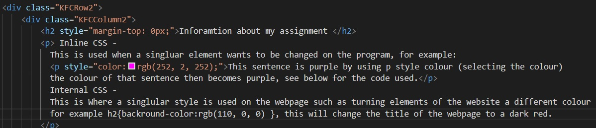
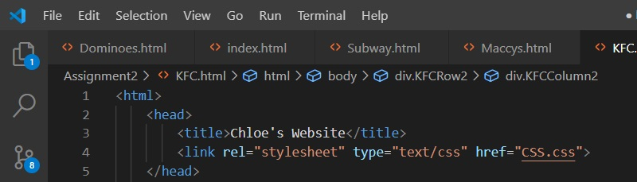

Inline CSS - This is used when a singluar element wants to be changed on the program, for example:
This sentence is purple by using p style colour (selecting the colour) the colour of that sentence then becomes purple, see below for the code used.
Internal CSS - This is Where a singlular style is used on the webpage such as turning elements of the website a different colour for example h2{backround-color:rgb(110, 0, 0) }, this will change the title of the webpage to a dark red. Which you can see down below.
External CSS - This is used to characterize the style for the webpages, using a CSS file where the website can be customised into what the creator wants the website to look like as well as have certain aspects on it such as a red navbar. A picture of the code will be provided at the bottom of the webpage.
CSS Box Model - This is used when the planning the design and layout of a webpage, which takes into consideration with margin, padding and border. As you can see in my assignment page i have use a white border going around each of the columns to clearly layout that they are there.

